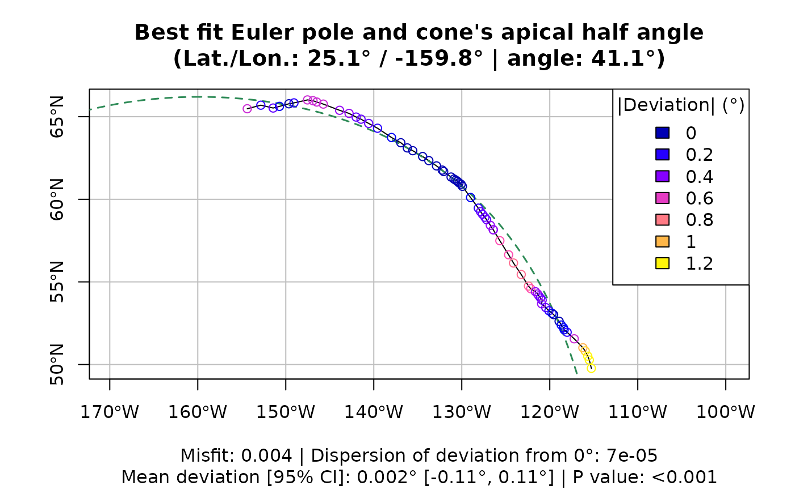
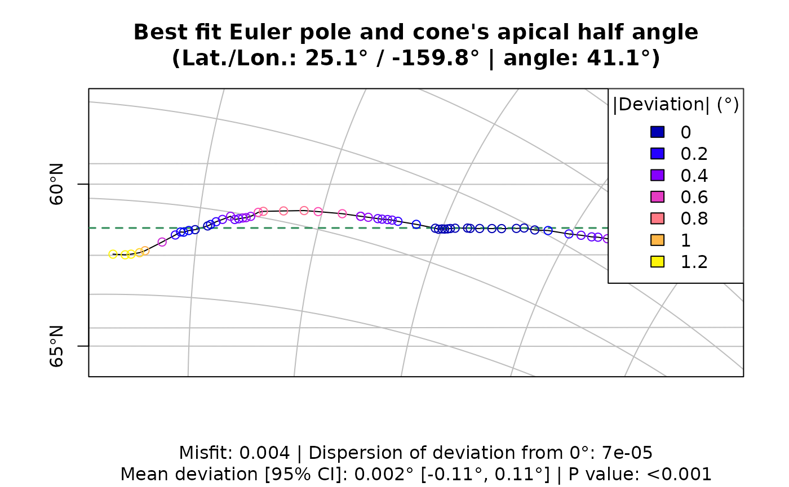

euler.reco
Tobias Stephan
2024-05-06
intro.RmdGeological structures (e.g. faults, mid-ocean ridges, …) form spherical structures on the Earth’s surface, that can be described in terms of small and great circles on a sphere. Because of the genetically link to plate motion, the associated axis centered in those circles and passing through the Earth’s center can be related to recent or past relative motions of neighboring plates. Thus, the axis (or Euler poles) can be used for reconstructing plate motion, or exploring geometrical relationships in tectonic settings.
library(euler.reco)
#> Warning in rgl.init(initValue, onlyNULL): RGL: unable to open X11 display
#> Warning: 'rgl.init' failed, running with 'rgl.useNULL = TRUE'.Data import
The data used for the approximation can be geological structure.
Either you have the geographic coordinates of the the structures
vertices (as a matrix or data.frame), or you import the structure as a
shape file (or other spatial file formats) via
sf::read_sf(). The example dataset, i.e. the trace of
Tintina Fault and the Rocky Mountain Trench in the
Canadian Cordillera, is giving as a sf object.
data("tintina")
tintina
#> Simple feature collection with 2 features and 3 fields
#> Geometry type: MULTILINESTRING
#> Dimension: XY
#> Bounding box: xmin: -154.3776 ymin: 49.76629 xmax: -115.2748 ymax: 66.01703
#> Geodetic CRS: WGS 84
#> Id Name Type geometry
#> 1 20 Rocky Mountain Trench NS dextral MULTILINESTRING ((-126.4191...
#> 2 21 Tintina Fault SS dextral MULTILINESTRING ((-154.3776...Find and evaluate the best-fitting small or circle for the geological structure
The best fit small circle can be retrieved by
euler_solution(). In our example, the structure represents
a strike-slip fault and, thus, expected to follow a small-circle
trajectory of the Euler pole to be approximated. Thus, we set the
sc argument to TRUE in order to calculate a
small circle fitting the structure:
res <- euler_solution(tintina, sc = TRUE)
res
#> lat lon angle misfit
#> 2.508365e+01 -1.598391e+02 4.111992e+01 4.440427e-03The function returns the coordinates of the best fit axis centered in the small circle and the small circles angle. Furthermore, it returns a misfit value, i.e. the residual of the least squares of the sum of the vectors. Here the misfit is \(0.004\) reflecting a good fit.
A good approximation of the structure by the small circle should have
a low deviation of the structure from the small circle
(data_deviation()). The distributions of the deviations can
be evaluated by:
data_deviation(tintina, res) |>
deviation_stats()
#> mean sd var disp CI95 min max
#> 1 0.002152623 0.9259888 0.0001305894 6.52961e-05 0.1100502 0.002049965 1.138149
#> Rayleigh.test p.value
#> 1 0.9998694 1.158596e-29In our example, the dispersion of the deviation angles from zero deviation (perfect fit) is very low. The zero deviation is within the 95% confidence interval as indicated by by the mean \(\pm\) the confidence angle. A Rayleigh test is also performed, here with the alternative hypothesis that the data is (circularly) normally distributed around 0. The null hypothesis is rejected and the alternative can be accepted.
Visualization
The solution can be quickly visualized through:
quick_plot(tintina)
The Mercator projection can also be transformed into a oblique Mercator projection where the approximated Euler pole will be at the top of the map. In such a coordinate system small and great circles are horizontal and vertical lines, respectively. In our example, the structure is a strike-slip fault, i.e. small circle structure. Thus we expect, the structure to be nearly horizontal in the reprojection:
quick_plot(tintina, proj = "omerc")